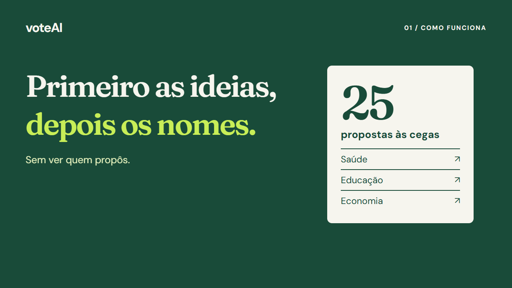
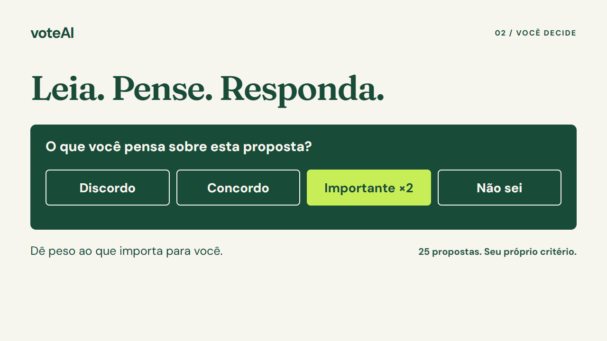
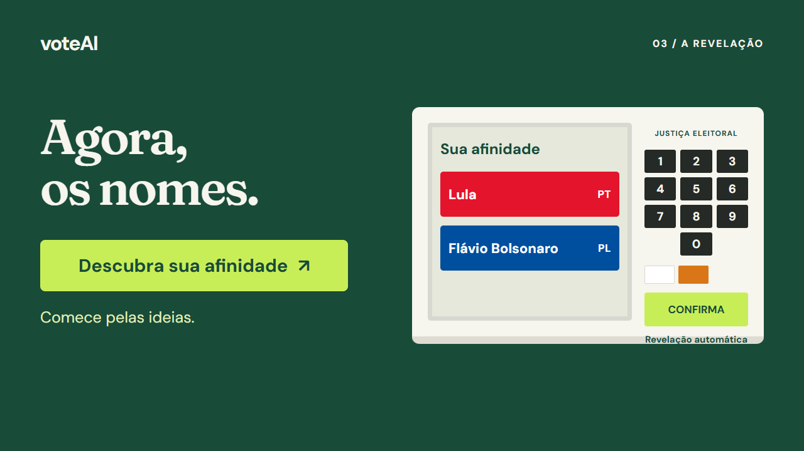

01 · Ideias · 0–6s
Os temas entram em sequência, sem revelar quem propôs.
voteAI · 18 segundos · 1280 × 720 · Sem áudio
Composição aprovada e exportada. MP4 local pronto para aplicação na landing page.

Os temas entram em sequência, sem revelar quem propôs.

Quatro escolhas; importância em dobro para o que pesa mais.

A urna acende CONFIRMA automaticamente e revela os nomes. Sem porcentagens ou vencedor inventado.